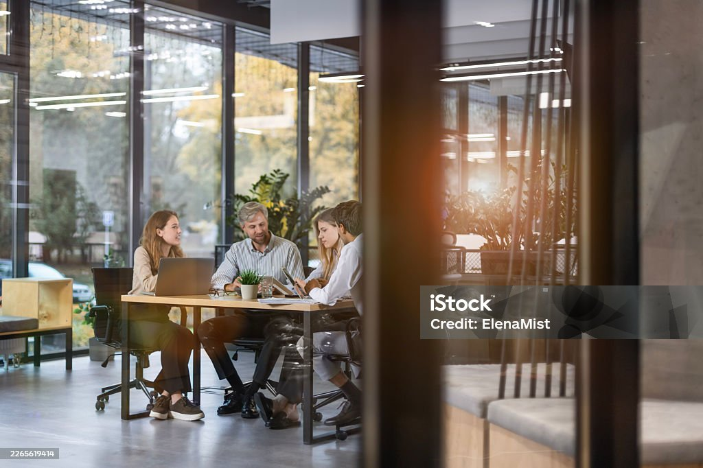

Research
Research Areas
Research Areas
The PhD is offered as a PhD in Business Administration. Each student pursues one of three doctoral tracks while benefiting from interdisciplinary research opportunities across OSB and the wider university.
Track 01
Business Analytics
- Artificial Intelligence and Machine Learning
- Optimization and Operations Research
- Supply Chain and Inventory Management
- Revenue and Pricing Analytics
- Decision Analytics
- Big Data and Unstructured Data
- Information Systems and Digital Transformation
- Stochastic Modeling, Simulation, and Applied Analytics
Track 02
Finance
- Corporate Finance
- Asset Pricing and Investments
- Banking and Financial Intermediation
- Corporate Governance
- Financial Markets
- Financial Econometrics
- Financial Reporting and Capital Markets
- Risk Management and Emerging Markets
Track 03
Management
- Organizational Behavior
- Strategy and Organization Theory
- Leadership and Human Resource Management
- Entrepreneurship and Innovation
- Sustainability and Business for Society
- Business Ethics
- Careers, Gender, and Diversity
- Qualitative and Mixed-Methods Research

Ready To Begin Your Doctoral Journey?
Review the admission requirements or reach out to the program office with your questions.